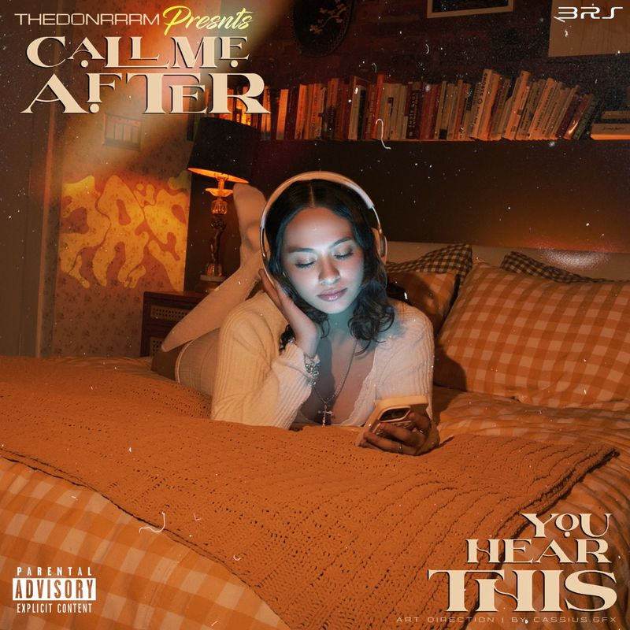
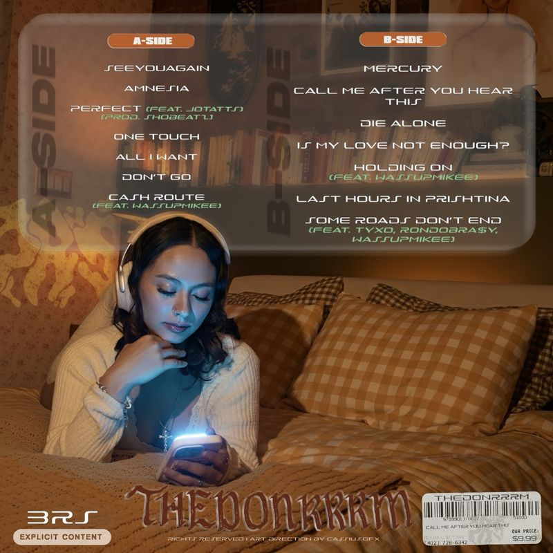
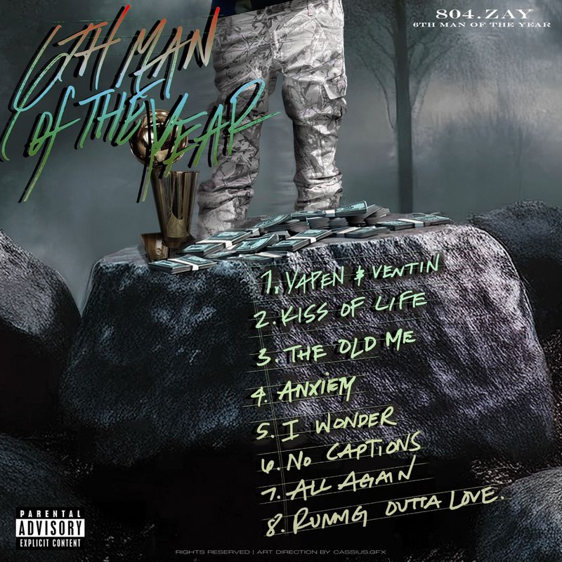

Gallery
Selected album cover art and tracklist designs for independent artists.



Design Process
Media Sources
All four gallery images are original cover art and tracklist designs created by Cai Williamson for Cassius Design Studio.
Design-process video filmed by Cai Williamson, showing the creation of an original Frank Ocean graphic T-shirt design. Original footage.
Design-process video filmed by Cai Williamson, showing the creation of an HBCU SGA campaign poster recreating Drake's Take Care album cover. Original footage.